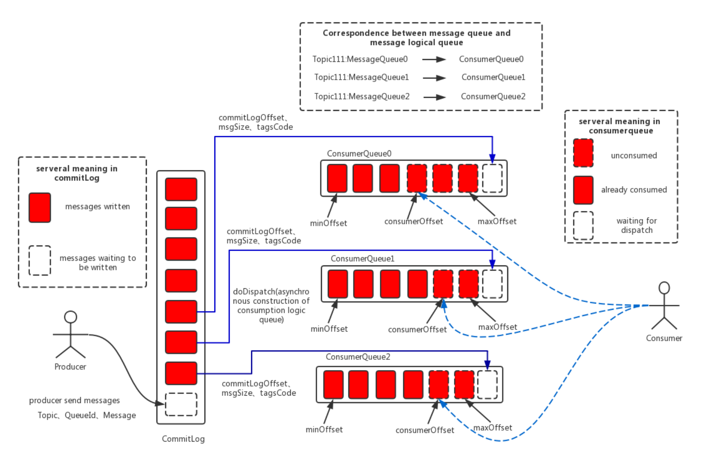
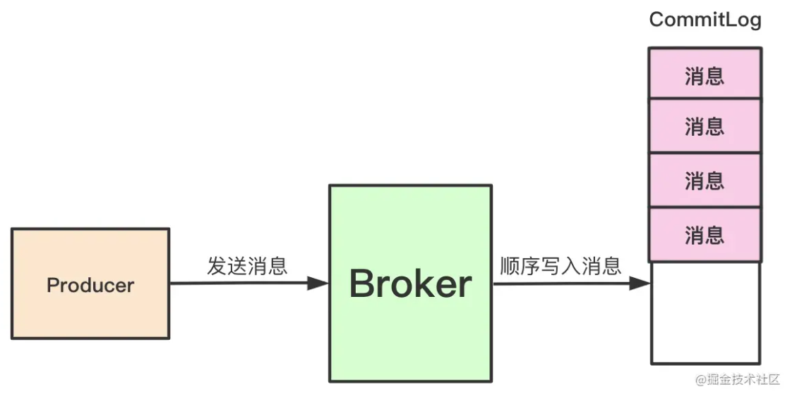
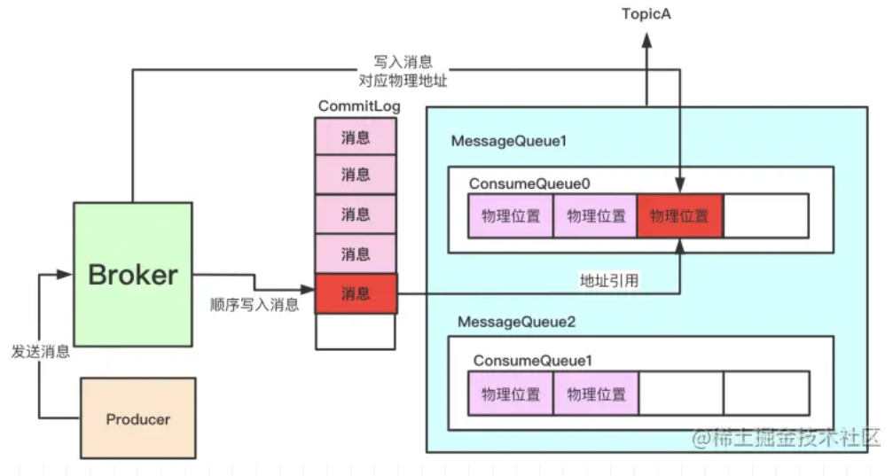
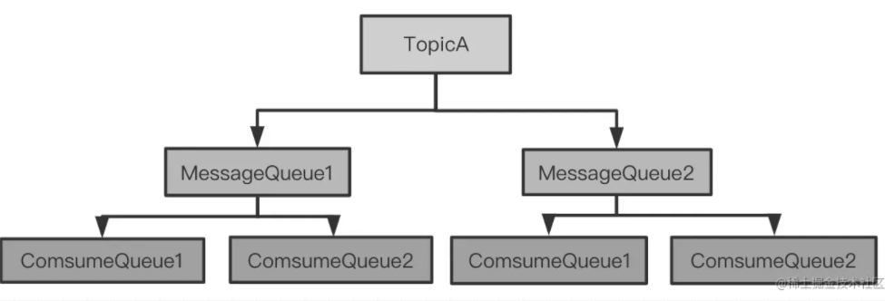
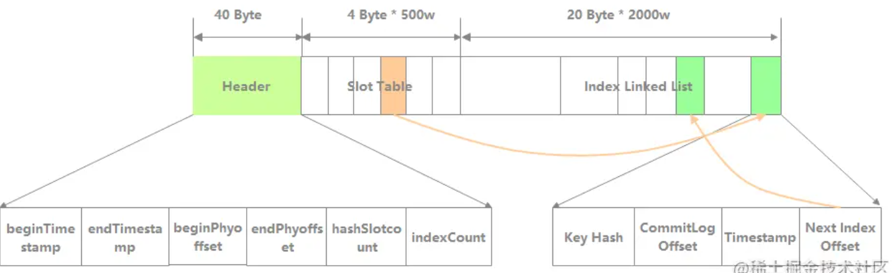
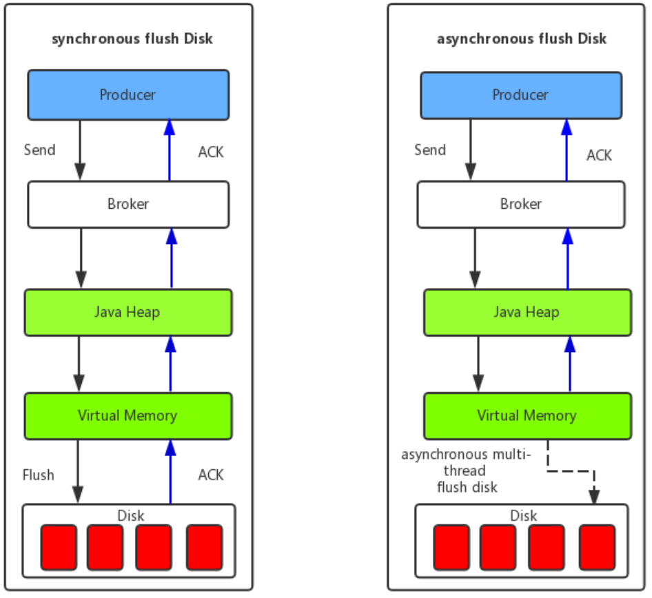
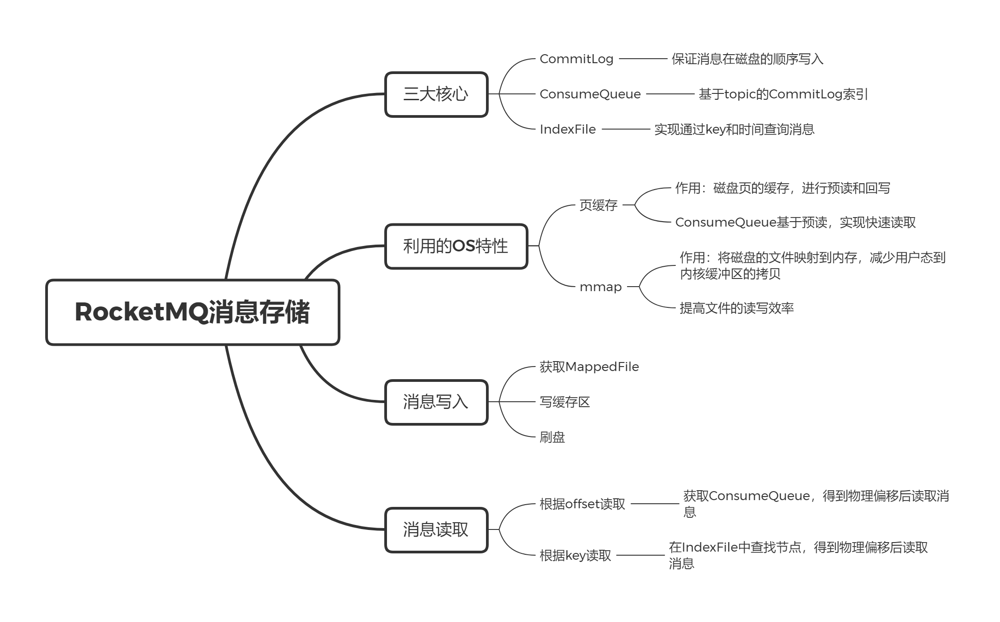

RocketMQ的消息存储
1. 介绍
上文 消息队列概述 中说到，为了保证消息不丢失，要求 Broker 将消息落盘后再给客户端发送确认，这就涉及到了消息存储机制。消息存储是 RocketMQ 最为复杂和重要的部分，但官方文档对此介绍却十分简略。
下图为官方的说明图。

RocketMQ 的消息存储主要由 CommitLog、ConsumeQueue 和 IndexFile 实现。
CommitLog
Broker 收到信息后，把这个消息顺序写入到磁盘上的一个文件，叫作 CommitLog。所有 topic 下的消息都写入到 CommitLog 中，实现严格的顺序写，提高磁盘写入速率。
CommitLog 存储了消息内容和元数据，其存储文件单个大小默认为 1G，文件名是起始偏移量，长度为 20 位。第一个文件名为 00000000000000000000，当第一个文件写满了，第二个文件为 00000000001073741824（1G = 1073741824），以此类推。

ConsumeQueue
RocketMQ 是基于 topic 和 tag 的订阅模式，消费消息也是根据 topic 进行的，遍历 CommitLog 查找 topic 十分低效，故引入 ComsumeQueue 来提高搜索效率。
ComsumeQueue 可以看成是基于 topic 的 CommitLog 索引，采用定长设计，每个条目 20 个字节，保存了指定 topic 下的消息的在 CommitLog 中的偏移 offset（8 字节）、消息大小 size（4字节）、和消息 tag 的 hashCode 值（8 字节）。

每一个 topic 下的每个 MessageQueue 都有对应的一系列 ConsumeQueue文件，在磁盘中存储以文件树的形式存在：

IndexFile
IndexFile 提供了一种可以通过 key 或时间区间来查询消息的方法。
IndexFile 的文件逻辑结构如下图，类似哈希表，主要由 Header、Slot Table、Index Linked List 三部分组成。

- Header：存储这个 IndexFile 文件的元信息，主要包括：
- beginTimestamp：包含消息的最小存储时间；
- endTimestamp：包含消息的最大存储时间；
- beginPhyoffset：包含消息的最小 CommitLog 文件偏移量；
- endPhyoffset：包含消息的最大 CommitLog 文件偏移量；
- hashSlotcount：包含 hashSlot 的数量；
- indexCount：已使用的 index 数量。
- Slot Table：哈希表，每个槽存储相同 hash 值的 IndexItem 链表头节点；
- Index Linked List：IndexItem 链表，包含：
- Key Hash：消息 key 的 hash；
- Commit Offset：消息的物理偏移；
- Next Index Offset：链表的下一个 IndexItem 的位置。
例如根据 key 查找，其效果类似哈希表的查找，会根据 key 的哈希值找到 IndexItem 链表头，遍历链表比对 key 自身，寻找匹配的 IndexItem。
2. 页缓存和mmap
在介绍写入和读取消息前，需要先补充两个 RocketMQ 利用的操作系统的机制。
2.1 页缓存
Page Cache，页缓存是操作系统对磁盘的缓存，将磁盘的数据缓存到内存中。
- 当内核进行一个读操作时，先检查数据是否命中（是否在页缓存中），如果是，则会直接从内存读取；否则则从磁盘中读取该页和相邻的页（称为预读），并加载到页缓存中；
- 当内核进行一个写操作时，将缓存中的数据标记为脏，并由一个后台进程写回磁盘，实现数据同步（称为回写）。用户层面的数据写入可以被近似为一个写内存的的操作。
页缓存的具体机制可见 《Linux 内核设计与实现》第 16 章。
可以发现，CommitLog 相对于 Page Cache，类似于 InnoDB 中的 redo log 相对于 Buffer Pool。Page Cache、Buffer Pool 与 CPU cache、分布式系统中的缓存也有共通之处，读者可以自行归纳。
在对消息进行消费时，会对 ConsumeQueue 进行顺序读取，在 Page Cache 的预读机制作用下，极大提升读性能。
2.2 mmap
mmap 可以将磁盘上的物理文件直接映射到用户态的内存地址中，减少了传统 IO 需要从用户态到内核缓冲区的拷贝操作。
mmap 的具体介绍可见《Linux 内核设计与实现》第 15.5 小节。
Java 中提供了 MappedBuffer 实现将文件操作转化为直接在内存地址进行操作。RocketMQ 通过 MappedByteBuffer 进行文件读写，提高了文件读写的效率。
3. 消息写入
最底层消息写入逻辑在 CommitLog 的 asyncPutMessage 方法中。
1 | // org.apache.rocketmq.store.CommitLog::asyncPutMessage |
asyncPutMessage 主要分为获取 MappedFile、写缓冲区、提交刷盘请求三步。
3.1 获取MappedFile
申请创建 MappedFile 会创建两个，这样下次请求即可使用已预创的 MappedFile，减少等待时间。
1 | //org.apache.rocketmq.store.AllocateMappedFileService::putRequestAndReturnMappedFile |
除了预分配之外，还会进行文件预热。因为虽然建立了虚拟内存地址到物理内存地址的映射，但此时并没有加载 Page Cache，当读写数据时发现未命中才会从磁盘中加载，影响性能。预热实现如下：
1 | //org.apache.rocketmq.store.MappedFile::warmMappedFile |
3.2 写缓冲区
CommitLog 中包含了消息内容、消息长度、魔数、发送时间、是否压缩等信息，CommitLog::appendMessagesInner 方法实现了写入逻辑。
1 | // org.apache.rocketmq.store.MappedFile::appendMessagesInner |
到此为此，消息被写入了 ByteBuffer，何时持久化将在刷盘中介绍。
此处只写入了 CommitLog，那么 ConsumeQueue 和 IndexFile 在哪写入呢？因为 CommitLog 内保存了 ConsumeQueue 和 IndexFile 的所需信息，即使 Broker 崩溃，也能依靠这些信息恢复。也就是说，存储 CommitLog 和存储 ConsumeQueue、IndexFile 没有必要的先后关系，故在消息存储时，会启动一个异步线程用于存储 ConsumeQueue 和 IndexFile，进一步提升性能。
3.3 消息刷盘
RocketMQ 的刷盘分为：
- 同步刷盘：消息持久到磁盘后 Broker 才发送确认给客户端。如果保证消息不丢失，需要采用同步刷盘，但会降低性能；
- 异步刷盘：写入 Page Cache 后 Broker 就发送确认，消息刷盘依赖操作系统完成。异步刷盘能够提高性能和吞吐量，但 Broker 崩溃后可能丢失消失。

4. 消息读取
消息读取逻辑简单许多，此处介绍根据 offset 和根据 key 查询两种方式。
4.1 根据 offset 查询
读取消息的过程为：
- 根据 topic 和 queueId 找到相应路径的 ConsumeQueue；
- 根据 ConsumeQueue 找到消息在 CommitLog 文件中的物理偏移，读取消息内容。
1 | //org.apache.rocketmq.store.DefaultMessageStore::getMessage |
4.2 根据 key 查询
根据 key 查询的过程：
- 根据 topic 和 key 找到 IndexFile 文件中的 IndexItem；
- 根据 indexItem 确定消息在 CommitLog 的物理偏移，读取消息内容。
1 | //org.apache.rocketmq.store.DefaultMessageStore::queryMessage |
5. 总结
